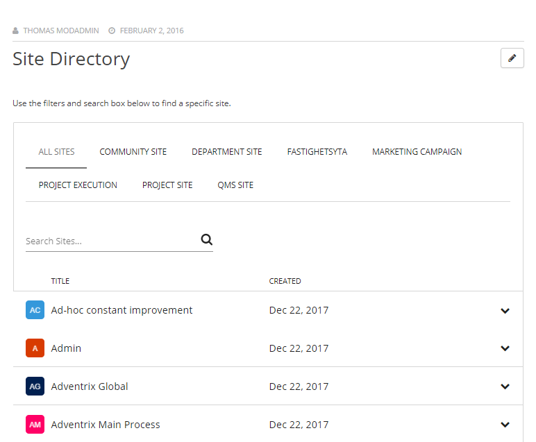
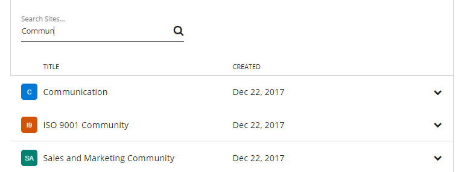
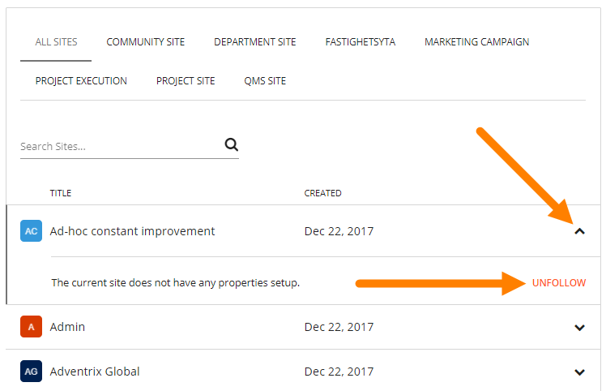
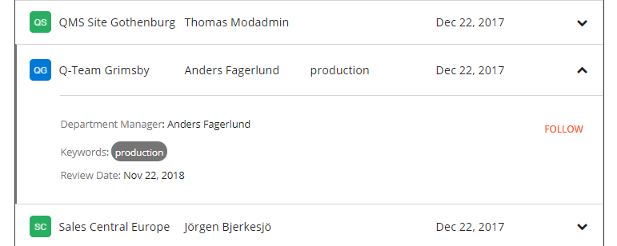
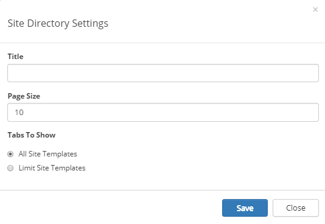
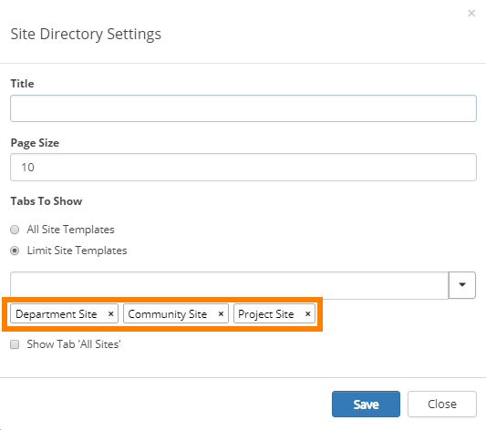

A Site Directory normally lists all sites the user has some sort of access to, of the site types the Site Directory is set to show.
This is an important difference to the My sites list, where one list displays all sites the user follows, and another list displays all sites the user are a member of.
An owner of a site can decide to show the site in the Site Directory even for users that has no access, using the setting "Make public in Site Directory", available in "Team Site Quick Edit".
Office 365 team sites that are created with Omnia functionality are also shown in the list. Important to remember is that properties must be set when the Office 365 site is created. There's no options for editing properties for Office 365 team sites.
The user can view the list for all sites or for a certin type of site (a "type" is all sites created from a certain site template).

The user can search for sites using part of, or the whole, names. Note that upper and lower case apply.
Here's a search example for "Commun":

The user can follow or unfollow a site by opening the small menu to the right:

In the panel opened by this menu additional information about the site can be shown, for example:

The properties, that can be shown here, are set for the site template, except "Title" and "Created" which is always used, and displayed as headings in the list. See this description for more information about site template properties:
To implement a site directory, note the following:
To edit the settings for the control, active the Edit button and click the cogwheel for the control.


When you have selected "Limit Site Templates" you can select to show the "All Sites" tab or not - which in this case displays all sites of the chosen types.